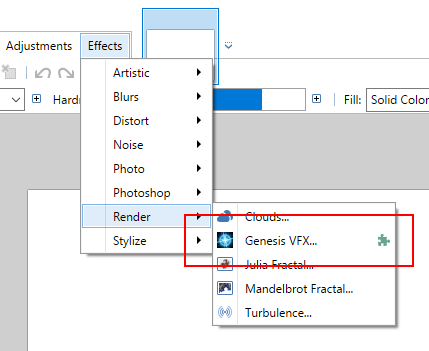
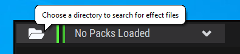
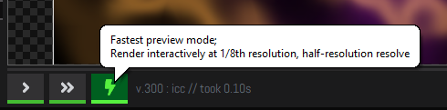
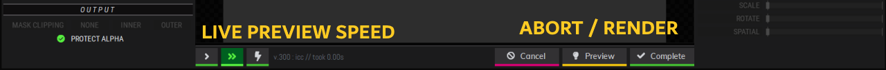

https://github.com/ishani/GenesisVFX
This is a manual installation of the Genesis VFX plugin for Paint.NET.
Copy the contents of \Effects into C:\Program Files\paint.net\Effects
\Effects\GenesisVFX.Asphalt.Controls.dll\Effects\GenesisVFX.Asphalt.Fonts.dll\Effects\GenesisVFX.Asphalt.PDN.dll\Effects\GenesisVFX.dll\Effects\GenesisVFX.Runtime\Regenesis64.dllThis is the UI libraries (asphalt), the Paint.NET plugin (GenesisVFX.dll) and the regenesis rendering engine runtime.
If the rendering runtime is missing, you will be told upon startup
If the runtime cannot load, it will cause an exception

.. this is most likely due to missing Visual Studio runtime libraries. You can download an installer from Microsoft here (from reference)
Genesis VFX loads preset collections from a zip file; we provide a great selection of examples in the \Library folder. Copy regenesis-library.zip somewhere .. such as your Documents folder, or somewhere you'll know where to find it.
Run Paint.NET; access Genesis VFX from the Effects / Render menu

Initially, you'll have no preset zip loaded - select one using the top-left load button

.. and go find where you copied the regenesis-library.zip file.
Browse and select presets from the collection; note that if you are rendering onto a white background, you may not be able to see many effects as they are designed to be additive. Switch to a solid background colour or load an image first.

If the live preview window is sluggish, try selecting a lower-resolution preview with the right-most (lightning bolt icon) button under the viewport.
Note: most buttons have tooltips to help!

Once happy, click Complete to render the result back to Paint.NET - or Cancel to abort.

To load custom loose preset .GFX files, place them in the user files folder
C:\Users\<Username>\Documents\paint.net User Files\GenesisVFX\
.. and they will appear in a special User folder in Genesis VFX

If you want to create .GFX files you will need to use the original Genesis VFX plugin - ensure you save in the 1.00 file format if you're using Genesis VFX 2 Pro to do so.
If you have a reasonably recent CPU, you can try the more intensively optimised rendering runtime. Copy the contents of the Optional-ICC\GenesisVFX.Runtime directory into C:\Program Files\paint.net\Effects\GenesisVFX.Runtime overwriting the contents.